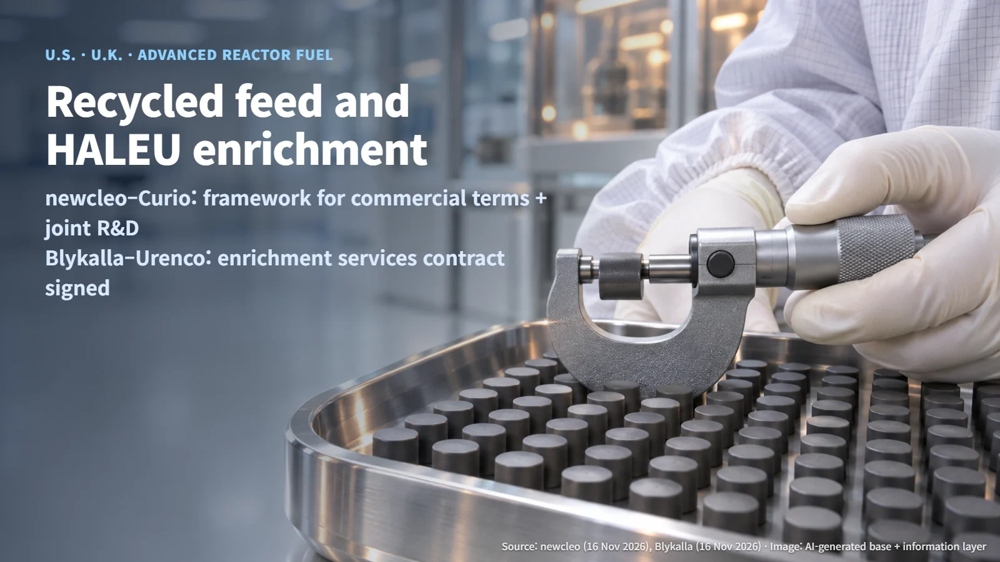
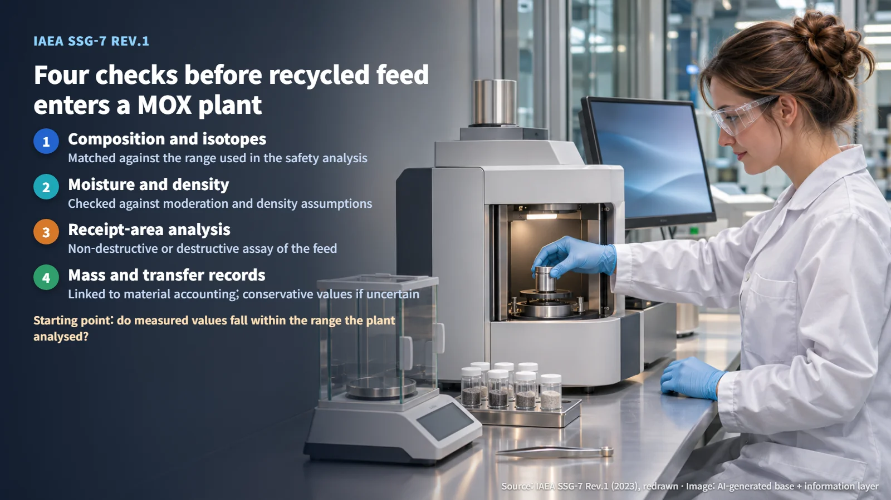
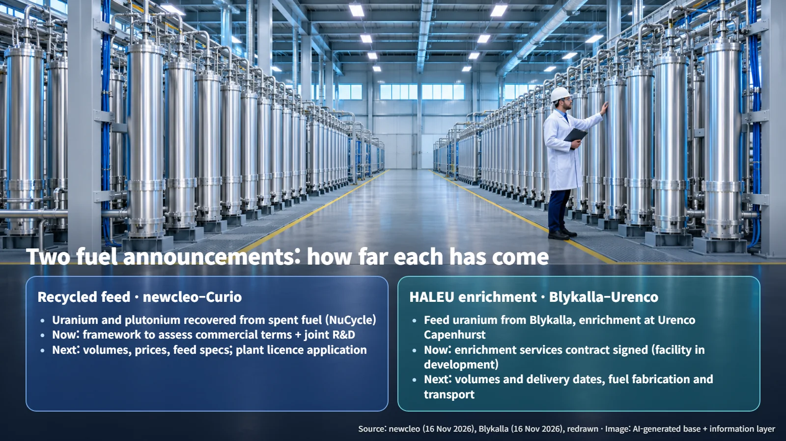

United States · United Kingdom · Fuel Supply
Two Routes to Advanced Reactor Fuel: newcleo–Curio Recycled MOX Feed and the Blykalla–Urenco HALEU Deal
newcleo and Curio set a framework to evaluate recycled feed for a planned U.S. MOX plant, while Blykalla and Urenco signed a HALEU enrichment services contract. Each sits at a different stage of fuel supply.
Every new reactor announcement invites the same follow-up question: where will the fuel come from? On November 16, 2026, two announcements addressed that question on the same day. One is a collaboration to turn material recovered from used nuclear fuel into feedstock for new fuel. The other is a contract to secure freshly enriched uranium. Below, we look at where each sits on the path to fuel supply, and at what a fuel plant checks before recycled feed can come through its doors.

Two Fuel Announcements on One Day: How Far Has Each Come?
The first is a recycled nuclear material supply collaboration between newcleo and Curio of the United States. The companies have set up a basic framework for assessing the commercial terms of recycled feed supply and defined areas for joint research and development on used fuel recycling. The feed is intended for the mixed oxide (MOX) fuel fabrication facility newcleo plans to build in the United States. MOX fuel is a blend of uranium oxide and plutonium oxide, and the plan links recycling to MOX fabrication and, later, to the deployment of lead-cooled fast reactors.
Curio is developing NuCycle, a technology for recovering useful materials such as uranium and plutonium from used nuclear fuel. The stated goals are to reduce reliance on newly mined uranium and to reduce long-lived waste. The current stage is a collaboration framework: volumes, prices and the start of deliveries will be settled in follow-up negotiations. Feed-specific acceptance specifications and contractual responsibilities have not been made public.
The second is the signing of a HALEU enrichment services supply contract between Blykalla and Urenco for the first SEALER reactor to be deployed in the United States. Blykalla will supply the feed uranium, and Urenco will enrich it at the HALEU facility it is developing at Capenhurst in the United Kingdom. Volumes, prices and the first delivery date have not been disclosed. One announcement is a framework for assessing supply terms; the other is a signed services contract. They start from different points and face different next gates.
Four Checks Before Recycled Feed Enters a MOX Plant
Before feed can enter a fuel plant, it goes through an acceptance review in which the plant decides whether it can take that material. The International Atomic Energy Agency (IAEA) safety guide SSG-7 Rev.1 covers MOX fabrication facilities and explains that safety analyses and operating conditions change with feed composition.
At the feed stage, the guide lists isotopic composition, moisture and density as control parameters. Isotopic composition is the share of each isotope, the slightly different-weight versions of the same element, within a material. Moisture and additives affect neutron moderation, meaning how much neutrons slow down and how readily they then cause fission. Handling conditions are therefore set by linking actual measurement records, alongside the material's name, to the inputs of the facility's safety assessment. Criticality safety, which keeps material well away from a self-sustaining chain reaction, starts from that link.
| Check | What is reviewed | What it connects to | |---|---|---| | Composition and isotopes | Composition and isotopic records for each feed | Composition range used in the safety analysis | | Moisture and density | Measurement conditions, results and units | Range of moderation and density assumptions | | Receipt-area analysis | Records matching equipment to samples | Basis for confirming feed characteristics | | Mass and material movement | Measurement, calibration and transfer records | Transfer control and uncertainty |
(Source: IAEA, SSG-7 Rev.1, reconstructed)
One question ties the four checks together: do the measured values of the supplied feed fall within the range the fabrication facility has assessed? Annex II of the guide cites non-destructive analysis, which measures without consuming a sample, and destructive analysis, which takes and processes a sample, as ways to confirm this in the receipt area. Where material characteristics are uncertain, the guide recommends conservative values that build in a margin on the safe side. The more complete the measurement data, the more precisely a plant can set its handling conditions, which is why measurement and record-keeping become a central topic in any talks on recycled feed supply.

Material Transfer Records and NRC Pre-Application Engagement
When feed moves from supplier to plant, nuclear material control and accounting (MC&A) moves with it. MC&A records and reconciles the quantity, composition and movement of nuclear material, much as a bank balances its ledger. SSG-7 Rev.1 explains that instruments measuring mass, volume and composition can also serve safety purposes. Contractual responsibility, signature and acceptance timing are to be settled in separate negotiated documents.
Regulatory preparation for the facility is proceeding through pre-application engagement with the US Nuclear Regulatory Commission (NRC):
- March 5, 2026: NRC closed meeting notice opens pre-application engagement on the plans, technology and tentative schedule for newcleo's new MOX fabrication facility (technical details are proprietary and withheld)
- August 6, 2026: newcleo announces submission of its Regulatory Engagement Plan (REP) for the facility
- November 16, 2026: newcleo and Curio announce the recycled feed collaboration
Counting the days, the NRC notice to the REP is about 154 days (26 remaining days of March + 122 days of April through July + 6 days of August), and the REP to the feed collaboration about 102 days (25 remaining days of August + 61 days of September and October + 16 days of November). Facility licensing preparation and feed procurement talks are moving forward a few months apart. The REP lays out technical and regulatory issues, planned submittals and a tentative engagement schedule ahead of a formal licence application; in the same announcement, newcleo described non-nuclear testing and model validation at the FASTER centre in France. The next gates are a formal licence application and finalized feed specifications. Impurity limits, numerical acceptance criteria, the treatment of measurement uncertainty and transfer responsibilities will take shape as facility documents are released.
Set Side by Side with the HALEU Enrichment Contract
HALEU (high-assay low-enriched uranium) is uranium with a higher share of fissile uranium-235 than conventional large-reactor fuel. An earlier post on the Oklo–Centrus HALEU contract covered what a firm HALEU agreement involves, so here we compare the two announcements directly.
| Item | newcleo–Curio | Blykalla–Urenco | |---|---|---| | Type | Collaboration framework (commercial terms + joint R&D) | Enrichment services contract signed | | Feed origin | Material recovered from used fuel | Feed uranium + enrichment | | Roles | Curio recovery, newcleo MOX fabrication | Blykalla feed, Urenco enrichment | | Target reactor | Future lead-cooled fast reactors | SEALER (55 MWe lead-cooled) | | Next gate | Supply-term talks, facility licence application | Capenhurst facility development, fuel fabrication and transport |
Both efforts point toward lead-cooled reactors. One route revives fuel that has already been used; the other enriches new uranium. Both are filling in the earliest links of the same chain: feed supply, processing facility, fuel fabrication, reactor deployment.

SEALER is a lead-cooled advanced reactor with an electrical output of 55 MWe, aimed at stable power demand from industrial sites and data centres. A power purchase agreement and a construction licence remain ahead, and for enriched uranium to become usable fuel, fabrication, transport and the deployment schedule will need to line up. For newcleo, the next checkpoint is whether the collaboration framework turns into concrete supply terms and a facility licence.
Asking first whether fuel news is a collaboration, a contract or a delivery makes a project's position much clearer. As volumes, delivery schedules and the MOX facility's licence documents become public, we will follow how the next links in the chain are filled.